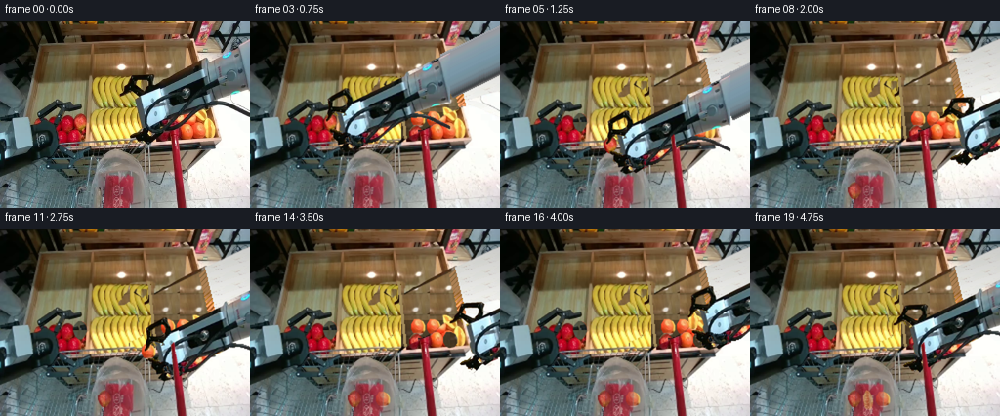
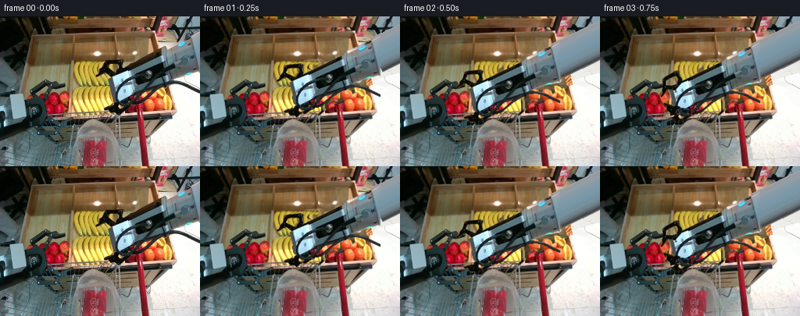
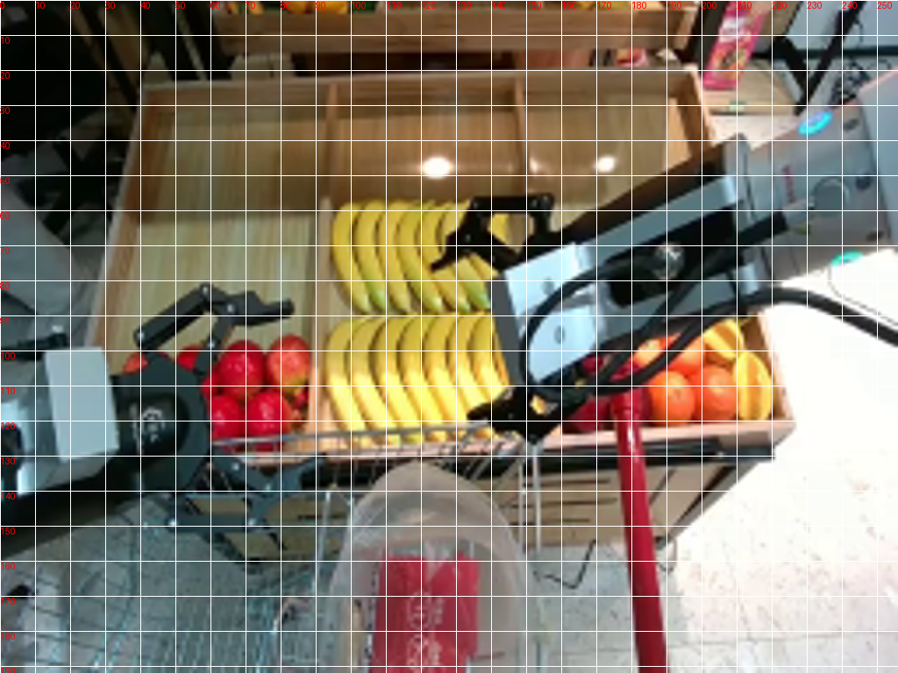
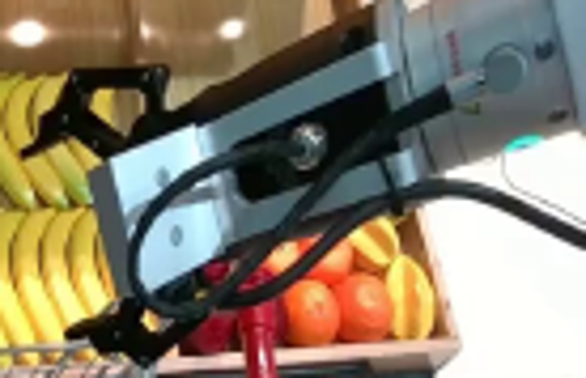
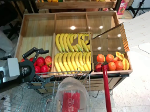
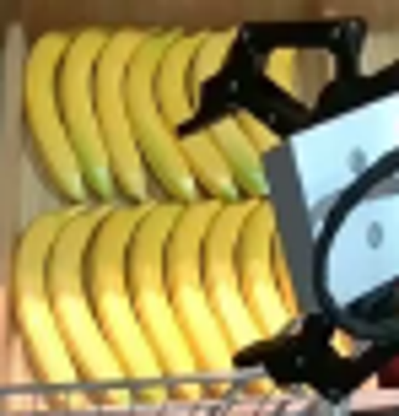
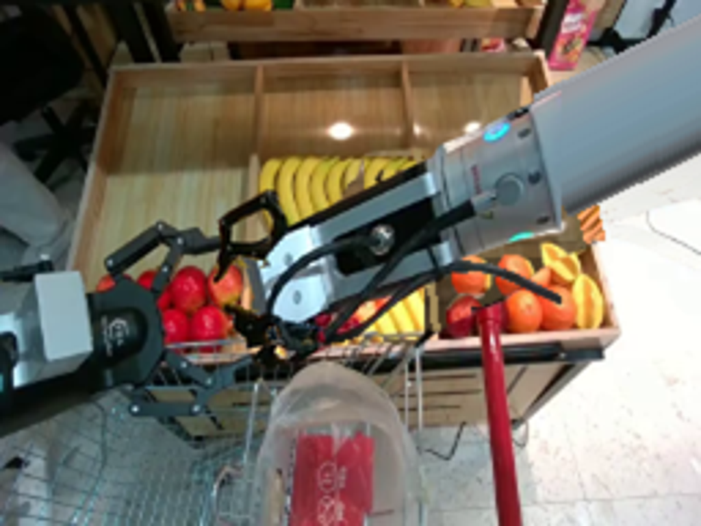
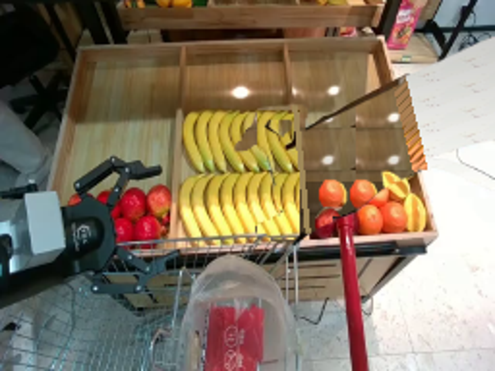

CODING AGENTS AS PIXEL WORLD MODELS
traex/GPT-6.1-Sol · common50_0000
点击播放 · 原生 RGB 像素
此结果可播放，但该运行尚未通过最终提交审核。页面展示不代表评测通过。
逐轮保存的候选
回放视频、检查图与代码变化。
每份候选均可单独播放。实际图片检查记录在下方工具轨迹中。
候选 01播放与检查图
点击播放 · 原生 RGB 像素

展开代码变化
--- 上一保存版本
+++ 本次保存版本
@@ -0,0 +1,216 @@
+from pathlib import Path
+import math
+import numpy as np
+from PIL import Image, ImageDraw, ImageFilter
+import artifact_io
+
+ROOT=Path(__file__).resolve().parent
+im=Image.open(ROOT/'first_frame.png').convert('RGB')
+A=np.asarray(im).copy(); H,W=192,256
+S=3
+
+def pmask(points,holes=()):
+ m=Image.new('L',(W*S,H*S)); d=ImageDraw.Draw(m)
+ d.polygon([(round(x*S),round(y*S)) for x,y in points],fill=255)
+ for p in holes:d.polygon([(round(x*S),round(y*S)) for x,y in p],fill=0)
+ return np.asarray(m.resize((W,H),Image.Resampling.LANCZOS)).astype(float)/255
+
+def rgba(rgb,mask):
+ out=np.zeros((H,W,4),np.uint8);out[:,:,:3]=rgb;out[:,:,3]=np.uint8(np.clip(mask,0,1)*255)
+ return Image.fromarray(out)
+
+# Separate the solid rigid chassis from the two articulating finger links.
+bodymask=pmask([(139,78),(209,44),(211,40),(221,36),(223,35),(248,23),(256,20),(260,70),(238,75),(220,81),(214,88),(186,102),(159,120),(151,115),(148,111)])
+wirepoly=pmask([(141,101),(147,89),(153,82),(168,75),(183,69),(194,70),(199,77),(213,80),(230,82),(244,86),(260,93),(260,100),(244,93),(229,88),(214,86),(205,87),(195,98),(181,110),(165,116),(149,121),(143,118),(147,113),(162,112),(177,104),(188,94),(197,85),(194,77),(183,76),(171,80),(158,88),(151,103),(146,108)])
+lum=A.mean(2); dark=np.clip((119-lum)/24,0,1)
+wiremask=wirepoly*dark
+bodymask=np.maximum(bodymask,wiremask)
+topmask=pmask([(122,77),(124,73),(131,66),(134,57),(139,56),(155,55),(158,57),(157,65),(155,75),(145,81),(137,78),(131,73),(127,77)],holes=[[(138,61),(151,61),(151,68),(146,72),(138,68),(135,66)]])*np.clip((134-lum)/36,0,1)
+bottommask=pmask([(132,117),(137,115),(148,110),(154,108),(159,104),(166,102),(170,105),(164,112),(155,119),(150,125),(146,128),(139,124),(139,121),(134,120)])*np.clip((126-lum)/30,0,1)
+# The red cart handle belongs to the fixed foreground rather than the moving arm.
+redpole=(np.indices((H,W))[1]>171)&(np.indices((H,W))[1]<184)&(np.indices((H,W))[0]>109)&(A[:,:,0]>A[:,:,1]*1.5)&(A[:,:,0]>A[:,:,2]*1.5)
+bodymask[redpole]=0;bottommask[redpole]=0
+armmask=np.maximum.reduce([bodymask,topmask,bottommask])
+
+# Photographic sprites for the three particular fruits to be transferred.
+applemask=pmask([(77,98),(80,95),(83,95),(86,97),(88,100),(89,105),(87,109),(84,113),(80,113),(77,110),(75,105),(75,101)])
+orangemask=pmask([(201,106),(206,106),(210,108),(212,112),(212,117),(209,121),(204,122),(200,120),(198,116),(198,111)])
+starmask=pmask([(213,100),(216,101),(218,105),(220,112),(219,118),(217,121),(213,120),(211,117),(210,111),(210,106)])
+fruits={
+ 'apple':(rgba(A,applemask),(82,104),applemask),
+ 'orange':(rgba(A,orangemask),(205,114),orangemask),
+ 'star':(rgba(A,starmask),(215,111),starmask)
+}
+
+def paste_sprite(canvas,sprite,old,new,angle=0,alpha=1):
+ # Single Euclidean transform: shape, lighting and texture remain rigid.
+ theta=math.radians(angle);c=math.cos(theta);s=math.sin(theta)
+ ox,oy=old; nx,ny=new
+ affine=(c,s,ox-c*nx-s*ny,-s,c,oy+s*nx-c*ny)
+ patch=sprite.transform(canvas.size,Image.Transform.AFFINE,affine,Image.Resampling.BICUBIC)
+ if alpha != 1:
+ p=np.asarray(patch).copy();p[:,:,3]=(p[:,:,3]*alpha).astype(np.uint8);patch=Image.fromarray(p)
+ canvas.alpha_composite(patch)
+
+# Reveal the stationary display under the initial arm with matched pieces of
+# the supplied wood and fruit textures. No outside pixels or models are used.
+yy,xx=np.indices((H,W))
+clean=A.copy()
+# Quiet reflected wooden tray texture from the unoccluded back of that tray.
+wood=A[30+(yy%22),153+((xx-150)%34)].astype(float)
+wood*=np.clip(1-0.004*np.maximum(yy-55,0),0.60,1)[:,:,None]
+recon=wood.astype(np.uint8)
+# Floor beyond the tray; use the real floor grain at the lower right.
+floor=A[116+((yy*3+xx)%39),232+(xx%23)].astype(float)
+factor=np.clip(.75+.0026*yy,.75,1.04)
+floor=np.clip(floor*factor[:,:,None],0,255).astype(np.uint8)
+rightedge=199+(yy-25)*.24
+outside=xx>rightedge+7
+recon[outside]=floor[outside]
+# Matching narrow wooden rim running along the right edge of the bin.
+rim=(xx>rightedge-1)&(xx<=rightedge+7)
+texture=A[30+(yy%89),89+((xx+yy)%5)].astype(float)
+recon[rim]=np.clip(texture[rim]*np.array([1.10,.94,.84]),0,255).astype(np.uint8)
+# Continue the two rows of bananas behind the occluded palm using their
+# own texture and curvature rather than painting schematic fruit.
+ban=(xx>=133)&(xx<155)&(yy>=57)&(yy<124)
+recon[ban]=A[yy[ban],(xx[ban]-25)]
+# Depth shadows underneath the right-hand produce.
+low=(yy>93)&(yy<124)&(xx>=155)&(xx<rightedge-2)
+recon[low]=np.clip(wood[low]*.69,0,255).astype(np.uint8)
+rc=Image.fromarray(recon).convert('RGBA')
+for dst in [(172,101),(188,101),(192,114)]:
+ paste_sprite(rc,fruits['orange'][0],fruits['orange'][1],dst)
+paste_sprite(rc,fruits['apple'][0],fruits['apple'][1],(170,116))
+paste_sprite(rc,fruits['star'][0],fruits['star'][1],(205,97),-33)
+recon=np.asarray(rc)[:,:,:3].copy()
+# Restore the middle divider where it was hidden by the wrist.
+rd=ImageDraw.Draw(rc)
+rd.line([(150,32),(159,123)],fill=(160,137,89),width=3)
+recon=np.asarray(rc)[:,:,:3].copy()
+# Slightly feather the removal to avoid a black silhouette left behind.
+remove=np.asarray(Image.fromarray((armmask*255).astype(np.uint8)).filter(ImageFilter.MaxFilter(3)).filter(ImageFilter.GaussianBlur(.32))).astype(float)/255
+clean=np.uint8(np.clip(A*(1-remove[:,:,None])+recon*remove[:,:,None],0,255))
+# Preserve the cart's red handle and existing rail in front of the tray.
+clean[redpole]=A[redpole]
+Image.fromarray(clean).save(ROOT/'.tmp/clean.png')
+
+# A rigid continuation of the forearm beyond the camera crop. Its transverse
+# texture is sampled from the visible metallic sleeve, with fixed geometry.
+BW,BH=430,280
+body=Image.new('RGBA',(BW,BH))
+# Original coordinates on this canvas have a 50-pixel vertical margin.
+yoff=50
+bv=np.asarray(body).copy()
+for y in range(BH):
+ for x in range(246,BW):
+ # Local axial and transverse coordinates of the sleeve.
+ t=(x-251)*.899+(y-yoff-44)*(-.438)
+ n=(x-251)*.438+(y-yoff-44)*.899
+ if t>=-3 and abs(n)<=23:
+ sy=int(np.clip(44+n/.899,23,68)); sx=253
+ col=A[sy,sx].astype(float)
+ col=np.clip(col*(.98+.025*math.cos(n*.12)),0,255)
+ bv[y,x,:3]=col.astype(np.uint8);bv[y,x,3]=255
+body=Image.fromarray(bv)
+body.alpha_composite(rgba(A,bodymask),(0,yoff))
+top=Image.new('RGBA',(BW,BH));top.alpha_composite(rgba(A,topmask),(0,yoff))
+bottom=Image.new('RGBA',(BW,BH));bottom.alpha_composite(rgba(A,bottommask),(0,yoff))
+
+# Transform on a supersampled canvas, to maintain clean photographic edges.
+def arm_piece(canvas,sprite,pos,hinge=None,hinge_angle=0):
+ px,py=pos
+ # All chassis poses are translations (no stretching); fingers rotate at
+ # their fixed pins and keep their exact shape.
+ th=math.radians(hinge_angle);c=math.cos(th);s=math.sin(th)
+ if hinge is None: h=(133,91)
+ else:h=hinge
+ dx=px-133;dy=py-91
+ hx,hy=h
+ # Inverse map from supersampled output to rigid local/source coordinates.
+ a=c/S;b=s/S;d=-s/S;e=c/S
+ tx=hx-c*(hx+dx)-s*(hy+dy)
+ ty=hy+s*(hx+dx)-c*(hy+dy)+yoff
+ patch=sprite.transform(canvas.size,Image.Transform.AFFINE,(a,b,tx,d,e,ty),Image.Resampling.BICUBIC)
+ canvas.alpha_composite(patch)
+
+# Target holes use shaded wooden crate grain instead of leaving fruit ghosts.
+def remove_fruit(base,name):
+ sprite,cent,mask=fruits[name]
+ y,x=np.indices((H,W));cx,cy=cent
+ if name=='apple':
+ patch=A[72+((y-cy)%17),65+((x-cx)%20)].astype(float)*.56
+ else:
+ patch=A[32+((y-cy)%18),164+((x-cx)%23)].astype(float)*.49
+ m=np.clip(mask*1.1,0,1)
+ return np.uint8(np.clip(base*(1-m[:,:,None])+patch*m[:,:,None],0,255))
+
+# Each object has an approach, closure, lift, transfer and release. The final
+# placement settles behind the translucent front of the open shopping bag.
+poses=[
+ ((133,91),0,None),
+ ((108,96),.1,None),
+ ((82,104),.1,None),
+ ((82,104),1,'apple'),
+ ((94,89),1,'apple'),
+ ((113,127),1,'apple'),
+ ((120,148),.05,None),
+ ((169,124),0,None),
+ ((205,114),0,None),
+ ((205,114),1,'orange'),
+ ((194,96),1,'orange'),
+ ((152,126),1,'orange'),
+ ((125,148),.03,None),
+ ((177,121),0,None),
+ ((215,111),0,None),
+ ((215,111),.83,'star'),
+ ((198,94),.83,'star'),
+ ((151,124),.83,'star'),
+ ((119,149),.05,None),
+ ((157,113),0,None)
+]
+
+def inbag(canvas,name,center):
+ # Contents behind a thin sheet of clear plastic and the real red printing.
+ patch=Image.new('RGBA',(W,H))
+ paste_sprite(patch,fruits[name][0],fruits[name][1],center)
+ arr=np.asarray(patch).copy();alpha=arr[:,:,3].astype(float)/255
+ front=np.asarray(im).astype(float)
+ # Bag surface slightly desaturates and brightens the enclosed fruit.
+ color=arr[:,:,:3].astype(float)
+ trans=np.full((H,W),.23)
+ label=(xx>107)&(xx<137)&(yy>156)
+ trans[label]=.58
+ color=color*(1-trans[:,:,None])+front*trans[:,:,None]
+ arr[:,:,:3]=np.clip(color,0,255).astype(np.uint8)
+ patch=Image.fromarray(arr).resize((W*S,H*S),Image.Resampling.BICUBIC)
+ canvas.alpha_composite(patch)
+
+frames=[]
+for f,(pos,closed,held) in enumerate(poses):
+ if f==0:
+ frames.append(A.copy());continue
+ bg=clean.copy()
+ if f>=3:bg=remove_fruit(bg,'apple')
+ if f>=9:bg=remove_fruit(bg,'orange')
+ if f>=15:bg=remove_fruit(bg,'star')
+ canvas=Image.fromarray(bg).convert('RGBA').resize((W*S,H*S),Image.Resampling.BICUBIC)
+ if f>=6:inbag(canvas,'apple',(119,158) if f==6 else (107,174))
+ if f>=12:inbag(canvas,'orange',(125,158) if f==12 else (136,175))
+ if f>=18:inbag(canvas,'star',(119,158) if f==18 else (121,176))
+ # The chassis and jaw links are fully rigid and follow the same root pose.
+ arm_piece(canvas,body,pos)
+ if held:
+ # Object held in the jaw opening, original photographed surface intact.
+ item=Image.new('RGBA',(W,H));paste_sprite(item,fruits[held][0],fruits[held][1],pos)
+ canvas.alpha_composite(item.resize((W*S,H*S),Image.Resampling.BICUBIC))
+ arm_piece(canvas,top,pos,(154,70),-27*closed)
+ arm_piece(canvas,bottom,pos,(161,108),40*closed)
+ # Cart handle depth occlusion, as in the source camera view.
+ polealpha=pmask([(175,119),(178,116),(190,192),(181,192)])
+ pole=rgba(A,polealpha).resize((W*S,H*S),Image.Resampling.BICUBIC)
+ canvas.alpha_composite(pole)
+ frame=np.asarray(canvas.convert('RGB').resize((W,H),Image.Resampling.LANCZOS)).copy()
+ frames.append(frame)
+frames=np.stack(frames).astype(np.uint8)
+artifact_io.save(frames,ROOT)
候选 02播放与检查图
点击播放 · 原生 RGB 像素


展开代码变化
--- 上一保存版本
+++ 本次保存版本
@@ -20,7 +20,7 @@
return Image.fromarray(out)
# Separate the solid rigid chassis from the two articulating finger links.
-bodymask=pmask([(139,78),(209,44),(211,40),(221,36),(223,35),(248,23),(256,20),(260,70),(238,75),(220,81),(214,88),(186,102),(159,120),(151,115),(148,111)])
+bodymask=pmask([(137,78),(155,65),(204,40),(210,37),(219,34),(223,33),(248,21),(256,18),(260,70),(238,75),(220,81),(214,88),(186,102),(159,120),(151,115),(148,111)])
wirepoly=pmask([(141,101),(147,89),(153,82),(168,75),(183,69),(194,70),(199,77),(213,80),(230,82),(244,86),(260,93),(260,100),(244,93),(229,88),(214,86),(205,87),(195,98),(181,110),(165,116),(149,121),(143,118),(147,113),(162,112),(177,104),(188,94),(197,85),(194,77),(183,76),(171,80),(158,88),(151,103),(146,108)])
lum=A.mean(2); dark=np.clip((119-lum)/24,0,1)
wiremask=wirepoly*dark
@@ -57,11 +57,11 @@
yy,xx=np.indices((H,W))
clean=A.copy()
# Quiet reflected wooden tray texture from the unoccluded back of that tray.
-wood=A[30+(yy%22),153+((xx-150)%34)].astype(float)
+wood=A[29+(yy%13),157+((xx-157)%31)].astype(float)
wood*=np.clip(1-0.004*np.maximum(yy-55,0),0.60,1)[:,:,None]
recon=wood.astype(np.uint8)
# Floor beyond the tray; use the real floor grain at the lower right.
-floor=A[116+((yy*3+xx)%39),232+(xx%23)].astype(float)
+floor=A[np.clip(yy+50,120,163),232+(xx%23)].astype(float)
factor=np.clip(.75+.0026*yy,.75,1.04)
floor=np.clip(floor*factor[:,:,None],0,255).astype(np.uint8)
rightedge=199+(yy-25)*.24
@@ -69,12 +69,12 @@
recon[outside]=floor[outside]
# Matching narrow wooden rim running along the right edge of the bin.
rim=(xx>rightedge-1)&(xx<=rightedge+7)
-texture=A[30+(yy%89),89+((xx+yy)%5)].astype(float)
+texture=A[29+(yy%13),91+((xx)%3)].astype(float)
recon[rim]=np.clip(texture[rim]*np.array([1.10,.94,.84]),0,255).astype(np.uint8)
# Continue the two rows of bananas behind the occluded palm using their
# own texture and curvature rather than painting schematic fruit.
ban=(xx>=133)&(xx<155)&(yy>=57)&(yy<124)
-recon[ban]=A[yy[ban],(xx[ban]-25)]
+recon[ban]=A[yy[ban],(xx[ban]-40)]
# Depth shadows underneath the right-hand produce.
low=(yy>93)&(yy<124)&(xx>=155)&(xx<rightedge-2)
recon[low]=np.clip(wood[low]*.69,0,255).astype(np.uint8)
@@ -89,7 +89,8 @@
rd.line([(150,32),(159,123)],fill=(160,137,89),width=3)
recon=np.asarray(rc)[:,:,:3].copy()
# Slightly feather the removal to avoid a black silhouette left behind.
-remove=np.asarray(Image.fromarray((armmask*255).astype(np.uint8)).filter(ImageFilter.MaxFilter(3)).filter(ImageFilter.GaussianBlur(.32))).astype(float)/255
+removemask=np.maximum(armmask,pmask([(121,77),(125,70),(131,64),(133,55),(157,54),(160,58),(158,70),(154,79),(143,83),(136,79),(131,75),(127,79)]))
+remove=np.asarray(Image.fromarray((removemask*255).astype(np.uint8)).filter(ImageFilter.MaxFilter(3)).filter(ImageFilter.GaussianBlur(.32))).astype(float)/255
clean=np.uint8(np.clip(A*(1-remove[:,:,None])+recon*remove[:,:,None],0,255))
# Preserve the cart's red handle and existing rail in front of the tray.
clean[redpole]=A[redpole]
候选 03播放与检查图

候选 04播放与检查图
点击播放 · 原生 RGB 像素
展开代码变化
--- 上一保存版本 +++ 本次保存版本 @@ -57,7 +57,8 @@ yy,xx=np.indices((H,W)) clean=A.copy() # Quiet reflected wooden tray texture from the unoccluded back of that tray. -wood=A[29+(yy%13),157+((xx-157)%31)].astype(float) +# Continuous warp of the exposed wooden surface (no repeated seams). +wood=A[np.clip(29+(yy-29)*.14,29,42).astype(int),np.clip(157+(xx-157)*.50,157,188).astype(int)].astype(float) wood*=np.clip(1-0.004*np.maximum(yy-55,0),0.60,1)[:,:,None] recon=wood.astype(np.uint8) # Floor beyond the tray; use the real floor grain at the lower right. @@ -69,7 +70,7 @@ recon[outside]=floor[outside] # Matching narrow wooden rim running along the right edge of the bin. rim=(xx>rightedge-1)&(xx<=rightedge+7) -texture=A[29+(yy%13),91+((xx)%3)].astype(float) +texture=A[np.clip(29+(yy-29)*.14,29,42).astype(int),91+((xx)%3)].astype(float) recon[rim]=np.clip(texture[rim]*np.array([1.10,.94,.84]),0,255).astype(np.uint8) # Continue the two rows of bananas behind the occluded palm using their # own texture and curvature rather than painting schematic fruit.
可观测工具轨迹
实际执行的命令与返回图片。
命令 1exit 0
/bin/bash -lc 'ls -la; cat prompt.txt; cat GENERATION_RULES.md'
命令 2exit 0
/bin/bash -lc "cat task_spec.json; cat artifact_io.py; python - <<'PY'
from PIL import Image
im=Image.open('first_frame.png'); print(im.mode, im.size);im.resize((1024,768)).save('.tmp/enlarged.png')
PY"命令 3exit 0
/bin/bash -lc "python - <<'PY'
from PIL import Image,ImageDraw
im=Image.open('first_frame.png').resize((1024,768));d=ImageDraw.Draw(im)
for x in range(0,256,10):
d.line((x*4,0,x*4,768),fill=(255,255,255,70),width=1);d.text((x*4,0),str(x),fill='red')
for y in range(0,192,10):
d.line((0,y*4,1024,y*4),fill=(255,255,255,70),width=1);d.text((0,y*4),str(y),fill='red')
im.save('.tmp/grid.png')
PY"命令 4exit 0
/bin/bash -lc "python - <<'PY'
from PIL import Image
im=Image.open('first_frame.png');im.crop((118,40,256,129)).resize((828,534)).save('.tmp/gripper.png')
PY"命令 5exit 0
/bin/bash -lc "python - <<'PY' import scipy print(scipy.__version__) PY"
命令 6exit 0
/bin/bash -lc "mkdir -p .tmp; cat > generate.py <<'PY'
from pathlib import Path
import math
import numpy as np
from PIL import Image, ImageDraw, ImageFilter
import artifact_io
ROOT=Path(__file__).resolve().parent
im=Image.open(ROOT/'first_frame.png').convert('RGB')
A=np.asarray(im).copy(); H,W=192,256
S=3
def pmask(points,holes=()):
m=Image.new('L',(W*S,H*S)); d=ImageDraw.Draw(m)
d.polygon([(round(x*S),round(y*S)) for x,y in points],fill=255)
for p in holes:d.polygon([(round(x*S),round(y*S)) for x,y in p],fill=0)
return np.asarray(m.resize((W,H),Image.Resampling.LANCZOS)).astype(float)/255
def rgba(rgb,mask):
out=np.zeros((H,W,4),np.uint8);out[:,:,:3]=rgb;out[:,:,3]=np.uint8(np.clip(mask,0,1)*255)
return Image.fromarray(out)
# Separate the solid rigid chassis from the two articulating finger links.
bodymask=pmask([(139,78),(209,44),(211,40),(221,36),(223,35),(248,23),(256,20),(260,70),(238,75),(220,81),(214,88),(186,102),(159,120),(151,115),(148,111)])
wirepoly=pmask([(141,101),(147,89),(153,82),(168,75),(183,69),(194,70),(199,77),(213,80),(230,82),(244,86),(260,93),(260,100),(244,93),(229,88),(214,86),(205,87),(195,98),(181,110),(165,116),(149,121),(143,118),(147,113),(162,112),(177,104),(188,94),(197,85),(194,77),(183,76),(171,80),(158,88),(151,103),(146,108)])
lum=A.mean(2); dark=np.clip((119-lum)/24,0,1)
wiremask=wirepoly*dark
bodymask=np.maximum(bodymask,wiremask)
topmask=pmask([(122,77),(124,73),(131,66),(134,57),(139,56),(155,55),(158,57),(157,65),(155,75),(145,81),(137,78),(131,73),(127,77)],holes=[[(138,61),(151,61),(151,68),(146,72),(138,68),(135,66)]])*np.clip((134-lum)/36,0,1)
bottommask=pmask([(132,117),(137,115),(148,110),(154,108),(159,104),(166,102),(170,105),(164,112),(155,119),(150,125),(146,128),(139,124),(139,121),(134,120)])*np.clip((126-lum)/30,0,1)
# The red cart handle belongs to the fixed foreground rather than the moving arm.
redpole=(np.indices((H,W))[1]>171)&(np.indices((H,W))[1]<184)&(np.indices((H,W))[0]>109)&(A[:,:,0]>A[:,:,1]*1.5)&(A[:,:,0]>A[:,:,2]*1.5)
bodymask[redpole]=0;bottommask[redpole]=0
armmask=np.maximum.reduce([bodymask,topmask,bottommask])
# Photographic sprites for the three particular fruits to be transferred.
applemask=pmask([(77,98),(80,95),(83,95),(86,97),(88,100),(89,105),(87,109),(84,113),(80,113),(77,110),(75,105),(75,101)])
orangemask=pmask([(201,106),(206,106),(210,108),(212,112),(212,117),(209,121),(204,122),(200,120),(198,116),(198,111)])
starmask=pmask([(213,100),(216,101),(218,105),(220,112),(219,118),(217,121),(213,120),(211,117),(210,111),(210,106)])
fruits={
'apple':(rgba(A,applemask),(82,104),applemask),
'orange':(rgba(A,orangemask),(205,114),orangemask),
'star':(rgba(A,starmask),(215,111),starmask)
}
def paste_sprite(canvas,sprite,old,new,angle=0,alpha=1):
# Single Euclidean transform: shape, lighting and texture remain rigid.
theta=math.radians(angle);c=math.cos(theta);s=math.sin(theta)
ox,oy=old; nx,ny=new
affine=(c,s,ox-c*nx-s*ny,-s,c,oy+s*nx-c*ny)
patch=sprite.transform(canvas.size,Image.Transform.AFFINE,affine,Image.Resampling.BICUBIC)
if alpha "'!= 1:
p=np.asarray(patch).copy();p[:,:,3]=(p[:,:,3]*alpha).astype(np.uint8);patch=Image.fromarray(p)
canvas.alpha_composite(patch)
# Reveal the stationary display under the initial arm with matched pieces of
# the supplied wood and fruit textures. No outside pixels or models are used.
yy,xx=np.indices((H,W))
clean=A.copy()
# Quiet reflected wooden tray texture from the unoccluded back of that tray.
wood=A[30+(yy%22),153+((xx-150)%34)].astype(float)
wood*=np.clip(1-0.004*np.maximum(yy-55,0),0.60,1)[:,:,None]
recon=wood.astype(np.uint8)
# Floor beyond the tray; use the real floor grain at the lower right.
floor=A[116+((yy*3+xx)%39),232+(xx%23)].astype(float)
factor=np.clip(.75+.0026*yy,.75,1.04)
floor=np.clip(floor*factor[:,:,None],0,255).astype(np.uint8)
rightedge=199+(yy-25)*.24
outside=xx>rightedge+7
recon[outside]=floor[outside]
# Matching narrow wooden rim running along the right edge of the bin.
rim=(xx>rightedge-1)&(xx<=rightedge+7)
texture=A[30+(yy%89),89+((xx+yy)%5)].astype(float)
recon[rim]=np.clip(texture[rim]*np.array([1.10,.94,.84]),0,255).astype(np.uint8)
# Continue the two rows of bananas behind the occluded palm using their
# own texture and curvature rather than painting schematic fruit.
ban=(xx>=133)&(xx<155)&(yy>=57)&(yy<124)
recon[ban]=A[yy[ban],(xx[ban]-25)]
# Depth shadows underneath the right-hand produce.
low=(yy>93)&(yy<124)&(xx>=155)&(xx<rightedge-2)
recon[low]=np.clip(wood[low]*.69,0,255).astype(np.uint8)
rc=Image.fromarray(recon).convert('"'RGBA')
for dst in [(172,101),(188,101),(192,114)]:
paste_sprite(rc,fruits['orange'][0],fruits['orange'][1],dst)
paste_sprite(rc,fruits['apple'][0],fruits['apple'][1],(170,116))
paste_sprite(rc,fruits['star'][0],fruits['star'][1],(205,97),-33)
recon=np.asarray(rc)[:,:,:3].copy()
# Restore the middle divider where it was hidden by the wrist.
rd=ImageDraw.Draw(rc)
rd.line([(150,32),(159,123)],fill=(160,137,89),width=3)
recon=np.asarray(rc)[:,:,:3].copy()
# Slightly feather the removal to avoid a black silhouette left behind.
remove=np.asarray(Image.fromarray((armmask*255).astype(np.uint8)).filter(ImageFilter.MaxFilter(3)).filter(ImageFilter.GaussianBlur(.32))).astype(float)/255
clean=np.uint8(np.clip(A*(1-remove[:,:,None])+recon*remove[:,:,None],0,255))
# Preserve the cart's red handle and existing rail in front of the tray.
clean[redpole]=A[redpole]
Image.fromarray(clean).save(ROOT/'.tmp/clean.png')
# A rigid continuation of the forearm beyond the camera crop. Its transverse
# texture is sampled from the visible metallic sleeve, with fixed geometry.
BW,BH=430,280
body=Image.new('RGBA',(BW,BH))
# Original coordinates on this canvas have a 50-pixel vertical margin.
yoff=50
bv=np.asarray(body).copy()
for y in range(BH):
for x in range(246,BW):
# Local axial and transverse coordinates of the sleeve.
t=(x-251)*.899+(y-yoff-44)*(-.438)
n=(x-251)*.438+(y-yoff-44)*.899
if t>=-3 and abs(n)<=23:
sy=int(np.clip(44+n/.899,23,68)); sx=253
col=A[sy,sx].astype(float)
col=np.clip(col*(.98+.025*math.cos(n*.12)),0,255)
bv[y,x,:3]=col.astype(np.uint8);bv[y,x,3]=255
body=Image.fromarray(bv)
body.alpha_composite(rgba(A,bodymask),(0,yoff))
top=Image.new('RGBA',(BW,BH));top.alpha_composite(rgba(A,topmask),(0,yoff))
bottom=Image.new('RGBA',(BW,BH));bottom.alpha_composite(rgba(A,bottommask),(0,yoff))
# Transform on a supersampled canvas, to maintain clean photographic edges.
def arm_piece(canvas,sprite,pos,hinge=None,hinge_angle=0):
px,py=pos
# All chassis poses are translations (no stretching); fingers rotate at
# their fixed pins and keep their exact shape.
th=math.radians(hinge_angle);c=math.cos(th);s=math.sin(th)
if hinge is None: h=(133,91)
else:h=hinge
dx=px-133;dy=py-91
hx,hy=h
# Inverse map from supersampled output to rigid local/source coordinates.
a=c/S;b=s/S;d=-s/S;e=c/S
tx=hx-c*(hx+dx)-s*(hy+dy)
ty=hy+s*(hx+dx)-c*(hy+dy)+yoff
patch=sprite.transform(canvas.size,Image.Transform.AFFINE,(a,b,tx,d,e,ty),Image.Resampling.BICUBIC)
canvas.alpha_composite(patch)
# Target holes use shaded wooden crate grain instead of leaving fruit ghosts.
def remove_fruit(base,name):
sprite,cent,mask=fruits[name]
y,x=np.indices((H,W));cx,cy=cent
if name=='apple':
patch=A[72+((y-cy)%17),65+((x-cx)%20)].astype(float)*.56
else:
patch=A[32+((y-cy)%18),164+((x-cx)%23)].astype(float)*.49
m=np.clip(mask*1.1,0,1)
return np.uint8(np.clip(base*(1-m[:,:,None])+patch*m[:,:,None],0,255))
# Each object has an approach, closure, lift, transfer and release. The final
# placement settles behind the translucent front of the open shopping bag.
poses=[
((133,91),0,None),
((108,96),.1,None),
((82,104),.1,None),
((82,104),1,'apple'),
((94,89),1,'apple'),
((113,127),1,'apple'),
((120,148),.05,None),
((169,124),0,None),
((205,114),0,None),
((205,114),1,'orange'),
((194,96),1,'orange'),
((152,126),1,'orange'),
((125,148),.03,None),
((177,121),0,None),
((215,111),0,None),
((215,111),.83,'star'),
((198,94),.83,'star'),
((151,124),.83,'star'),
((119,149),.05,None),
((157,113),0,None)
]
def inbag(canvas,name,center):
# Contents behind a thin sheet of clear plastic and the real red printing.
patch=Image.new('RGBA',(W,H))
paste_sprite(patch,fruits[name][0],fruits[name][1],center)
arr=np.asarray(patch).copy();alpha=arr[:,:,3].astype(float)/255
front=np.asarray(im).astype(float)
# Bag surface slightly desaturates and brightens the enclosed fruit.
color=arr[:,:,:3].astype(float)
trans=np.full((H,W),.23)
label=(xx>107)&(xx<137)&(yy>156)
trans[label]=.58
color=color*(1-trans[:,:,None])+front*trans[:,:,None]
arr[:,:,:3]=np.clip(color,0,255).astype(np.uint8)
patch=Image.fromarray(arr).resize((W*S,H*S),Image.Resampling.BICUBIC)
canvas.alpha_composite(patch)
frames=[]
for f,(pos,closed,held) in enumerate(poses):
if f==0:
frames.append(A.copy());continue
bg=clean.copy()
if f>=3:bg=remove_fruit(bg,'apple')
if f>=9:bg=remove_fruit(bg,'orange')
if f>=15:bg=remove_fruit(bg,'star')
canvas=Image.fromarray(bg).convert('RGBA').resize((W*S,H*S),Image.Resampling.BICUBIC)
if f>=6:inbag(canvas,'apple',(119,158) if f==6 else (107,174))
if f>=12:inbag(canvas,'orange',(125,158) if f==12 else (136,175))
if f>=18:inbag(canvas,'star',(119,158) if f==18 else (121,176))
# The chassis and jaw links are fully rigid and follow the same root pose.
arm_piece(canvas,body,pos)
if held:
# Object held in the jaw opening, original photographed surface intact.
item=Image.new('RGBA',(W,H));paste_sprite(item,fruits[held][0],fruits[held][1],pos)
canvas.alpha_composite(item.resize((W*S,H*S),Image.Resampling.BICUBIC))
arm_piece(canvas,top,pos,(154,70),-27*closed)
arm_piece(canvas,bottom,pos,(161,108),40*closed)
# Cart handle depth occlusion, as in the source camera view.
polealpha=pmask([(175,119),(178,116),(190,192),(181,192)])
pole=rgba(A,polealpha).resize((W*S,H*S),Image.Resampling.BICUBIC)
canvas.alpha_composite(pole)
frame=np.asarray(canvas.convert('RGB').resize((W,H),Image.Resampling.LANCZOS)).copy()
frames.append(frame)
frames=np.stack(frames).astype(np.uint8)
artifact_io.save(frames,ROOT)
PY
python generate.py"命令 7exit 0
/bin/bash -lc "python - <<'PY'
from PIL import Image
im=Image.open('first_frame.png'); im.crop((90,52,164,129)).resize((444,462)).save('.tmp/bananas.png')
PY"命令 8exit 0
/bin/bash -lc "python - <<'PY'
from PIL import Image
for name in ['clean','../frames/03']:
p='.tmp/'+name+'.png' if name=='clean' else 'frames/03.png'
im=Image.open(p); im.resize((1024,768)).save('.tmp/'+('cleanbig' if name=='clean' else 'pickbig')+'.png')
PY"命令 9exit 0
/bin/bash -lc "python - <<'PY' p='generate.py' s=open(p).read().replace(\"[(139,78),(209,44),(211,40),(221,36),(223,35),(248,23),(256,20),(260,70)\",\"[(137,78),(155,65),(204,40),(210,37),(219,34),(223,33),(248,21),(256,18),(260,70)\") s=s.replace(\"wood=A[30+(yy%22),153+((xx-150)%34)].astype(float)\",\"wood=A[29+(yy%13),157+((xx-157)%31)].astype(float)\") s=s.replace(\"floor=A[116+((yy*3+xx)%39),232+(xx%23)].astype(float)\",\"floor=A[np.clip(yy+50,120,163),232+(xx%23)].astype(float)\") s=s.replace(\"texture=A[30+(yy%89),89+((xx+yy)%5)].astype(float)\",\"texture=A[29+(yy%13),91+((xx)%3)].astype(float)\") s=s.replace(\"recon[ban]=A[yy[ban],(xx[ban]-25)]\",\"recon[ban]=A[yy[ban],(xx[ban]-40)]\") # Ensure no dark silhouette of the upper gripper remains after vacating. s=s.replace(\"remove=np.asarray(Image.fromarray((armmask*255)\",\"removemask=np.maximum(armmask,pmask([(121,77),(125,70),(131,64),(133,55),(157,54),(160,58),(158,70),(154,79),(143,83),(136,79),(131,75),(127,79)]))\\nremove=np.asarray(Image.fromarray((removemask*255)\") open(p,'w').write(s) PY python generate.py"
命令 10exit 0
/bin/bash -lc "python - <<'PY'
p='generate.py';s=open(p).read()
s=s.replace(\"wood=A[29+(yy%13),157+((xx-157)%31)].astype(float)\",\"# Continuous warp of the exposed wooden surface (no repeated seams).\\nwood=A[np.clip(29+(yy-29)*.14,29,42).astype(int),np.clip(157+(xx-157)*.50,157,188).astype(int)].astype(float)\")
s=s.replace(\"texture=A[29+(yy%13),91+((xx)%3)].astype(float)\",\"texture=A[np.clip(29+(yy-29)*.14,29,42).astype(int),91+((xx)%3)].astype(float)\")
open(p,'w').write(s)
PY
python generate.py
python - <<'PY'
import numpy as np
from PIL import Image
from pathlib import Path
p=Path('.')
a=np.stack([np.array(Image.open(p/'frames'/f'{i:02d}.png')) for i in range(20)])
assert a.shape==(20,192,256,3)
assert a.dtype==np.uint8
assert np.array_equal(a[0],np.array(Image.open('first_frame.png')))
data=np.load('pixels.npz')['pixels'];print('Verified',a.shape,a.dtype,'first frame exact; packed shape',data.shape)
PY
which ffmpeg || true"视觉工具实际返回图片 1

视觉工具实际返回图片 2

视觉工具实际返回图片 3

视觉工具实际返回图片 4

视觉工具实际返回图片 5

视觉工具实际返回图片 6

视觉工具实际返回图片 7

视觉工具实际返回图片 8

视觉工具实际返回图片 9
保存候选 4 份；完成命令 10 次；可验证图片返回 9 张。原始 API 响应与完整日志保留在本地。